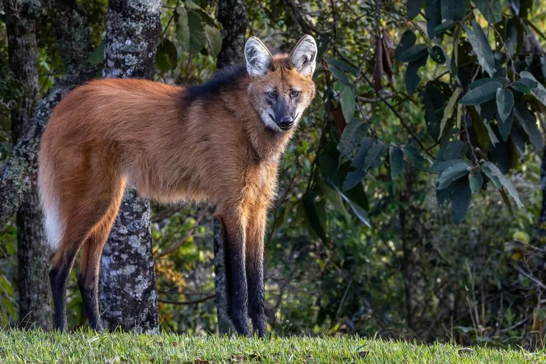

哺乳动物 · 动物界
鬃狼 Chrysocyon brachyurus

南美洲犬科中体型最大的成员，四肢极长、颈部有鬃毛，以果实和中小型动物为食，是稀树草原上的独行猎手。
- 分类
- 门脊索动物门纲哺乳纲目食肉目科犬科属鬃狼属
- 栖息环境
- 南美洲的稀树草原、湿地与灌丛
- 地理分布
- 巴西、巴拉圭、阿根廷和玻利维亚的塞拉多草原与潘塔纳尔湿地
- 保护级别
- IUCN 近危（NT）
物种志
鬃狼体长 0.95–1.3 米，尾长 0.3–0.45 米，体重 20–30 kg，是南美洲体型最大的犬科动物。它的四肢特别细长，被毛为红棕色，颈部至肩部有一道深色鬃毛，耳大而直立，尾巴蓬松；长腿使它能在高草丛中观察四周。
鬃狼分布于巴西、巴拉圭、阿根廷和玻利维亚的稀树草原、湿地和灌丛，栖息于开阔的塞拉多草原和潘塔纳尔湿地。它是杂食动物，食物中果实和植物占很大比例，也捕食鼠类、鸟类、爬行动物、昆虫和鱼类，长腿适合在草丛中追踪猎物。鬃狼多为独居或成对活动，晨昏和夜间活跃，领地以尿液标记，雄性会发出长距离的吼叫。雌性妊娠期约 63 天，每胎 2–5 仔。由于栖息地开垦和道路死亡，鬃狼被列为近危。
形态与习性
- 食性果实和植物为主，也吃鼠类、鸟类、爬行动物、昆虫与鱼类
- 体长0.95–1.3 m，尾长 0.3–0.45 m
- 体重20–30 kg
- 寿命野外约 10–15 年
- 繁殖妊娠期约 63 天，每胎 2–5 仔
- 外形四肢极长，颈部至肩部有深色鬃毛
- 社会结构多独居或成对，晨昏和夜间活动
趣味知识
- 鬃狼的四肢特别细长，能帮助它在高草丛中观察四周。
- 它的食物中果实和植物占很大比例，这在犬科中不多见。
- 鬃狼会发出长距离的吼叫，声音在草原上能传很远。
- 南美洲最大的犬科不是狼，而是外形独特的鬃狼。